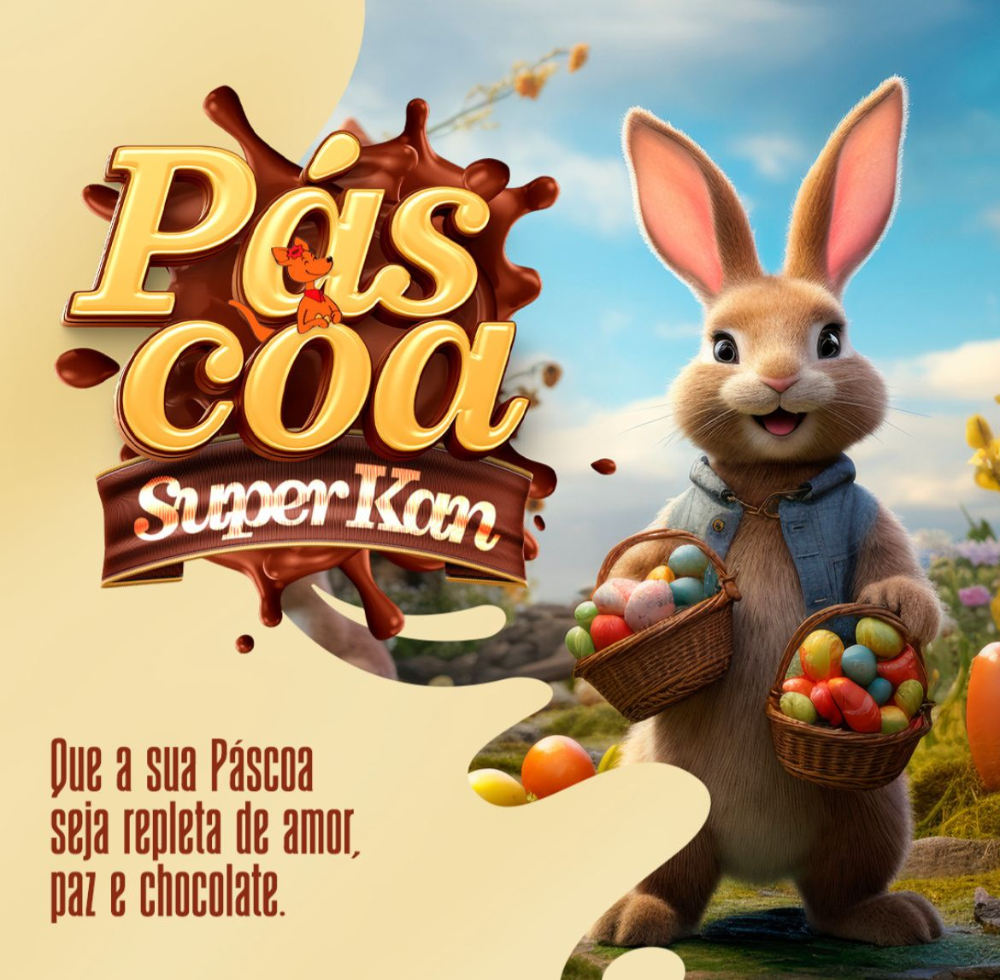
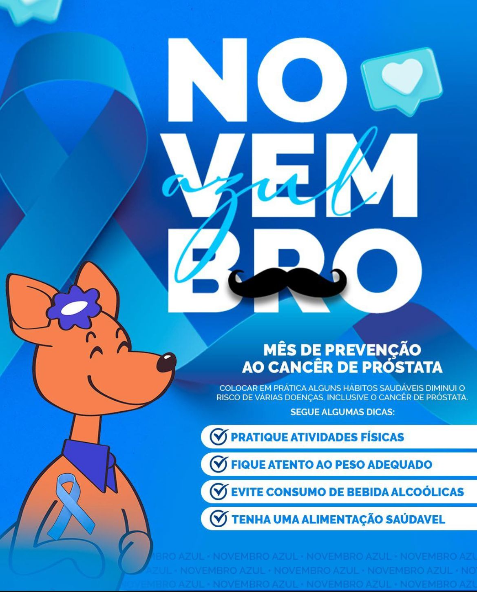

Existe frequência, mas falta estratégia para transformar publicação em posicionamento.
LUM / MARKETING & SOCIAL MEDIA
Presença digital com estratégia, não improviso.
Pesquisa, posicionamento, conteúdo e campanhas conectados para transformar a comunicação da marca em uma presença mais clara, consistente e relevante.
COFUNDADORA
Patricia dos Santos Ramos
Marketing & Social Media
ESTRATÉGIA / CONTEÚDO / POSICIONAMENTO
QUEM CONDUZ ESSA ÁREA
Marketing pensado antes de ser publicado.
Graduada em Marketing Digital e Influência pela PUCRS e com certificação especialista em Social Media, Patrícia soma sua bagagem acadêmica à experiência de mercado no atendimento a marcas de diversos segmentos.
Importante: Os cases e depoimentos apresentados abaixo compõem o histórico profissional prévio da cofundadora Patricia. Eles evidenciam a experiência acumulada trazida para a LUM, sem vínculo corporativo direto com o negócio.
QUANDO O MARKETING PRECISA MUDAR
Postar mais nem sempre é a resposta.
A audiência existe, mas a comunicação não conduz as pessoas até a decisão.
Bio, identidade, formatos e mensagem não trabalham como uma presença única.
A rotina do negócio impede planejamento, produção e análise contínua das redes.
O QUE FAZEMOS
Da análise à campanha.
Social Media
Gestão e criação de conteúdo para construir uma presença sólida, coerente e alinhada ao posicionamento da marca.
Estratégia de Marketing
Objetivo, público, contexto, concorrência, DNA da marca, linha editorial, funil, canais, orçamento, cronograma e análise de resultados.
Calendário de Conteúdo
Planejamento do que será publicado, quando, em qual canal e com qual objetivo para reduzir improviso e aumentar consistência.
Análise de Perfil
Diagnóstico de bio, username, foto, destaques, links, identidade visual, formatos e estratégia atual de posicionamento.
Tráfego Pago
Definição de público, plataformas, anúncios, testes, acompanhamento de métricas e otimizações orientadas a oportunidades de negócio.
TRABALHOS ANTERIORES
Conteúdo, campanhas e materiais promocionais.
Os materiais abaixo fazem parte da trajetória profissional da Patricia antes da LUM.
POSTS / SOCIAL MEDIA
Conteúdo para redes sociais.
Peças institucionais, sazonais, informativas e promocionais desenvolvidas para manter a marca presente.


ENCARTES
Materiais promocionais.
CAMPANHAS
Campanhas e ações sazonais.
DEPOIMENTOS DA TRAJETÓRIA PROFISSIONAL
O que clientes anteriores dizem.
“Ela é muito focada e organizada, e isso aparece nos resultados. Mesmo quando surgem desafios, ela resolve tudo com calma e muita estratégia.”
“Com a análise de perfil, consegui enxergar melhor o meu Instagram e trazer mais autenticidade. Tudo ficou mais alinhado e profissional, sem perder minha essência.”
LUM / PRÓXIMO MOVIMENTO